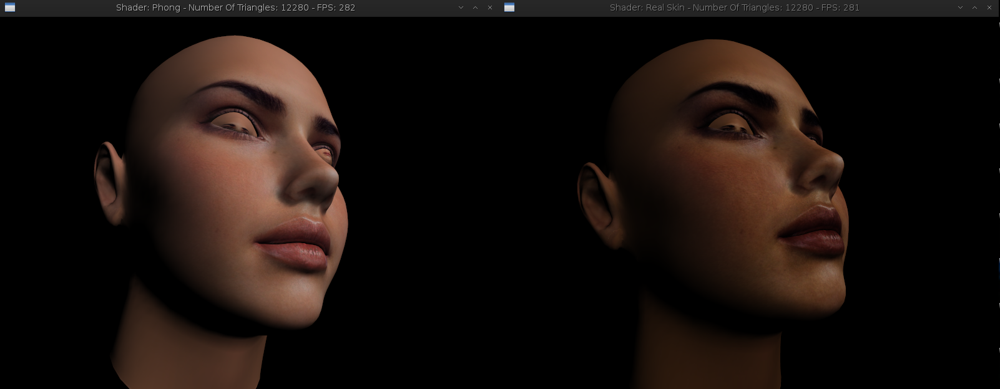
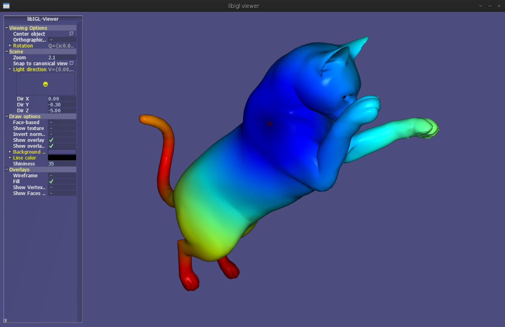
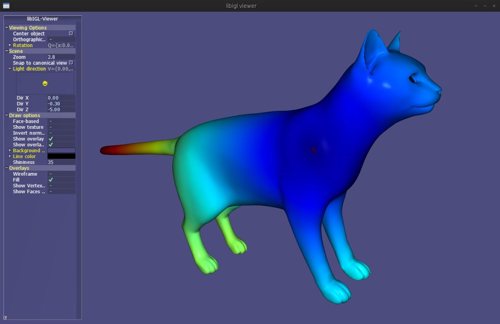

My projects
Here you can find some of my university/personal projects.
Mostly of my projects are hosted on GitHub and have a self-explaning README
- Real Time Skin Rendering
- GPU Image Sweep
- Sparse Modeling of Intrinsic Correspondences
This is an implementation of the NVIDIA's demo of real-time skin rendering.
This project was done in as the final project of a university course on rendering and it's not complete yet. It uses OpenGL 4.5 shaders for rendering and calculating the diffuse and specular light on the skin of the 3D model
For more informations, please visit the Github page of the project.
You can see bellow a screenshot of the final result
{kind=link}
This is a full implementation of the Image Sweep algorithm in OpenCL 1.1
This project was done in as the final project of a university course on computer vision and has as input two images as well as their transition matrix.
With these inputs, the program can create, using the image sweep algorith with the highest correlation, the 3D form of the object in the pictures
For more informations, please visit the Github page of the project.
It was supposed to have a screenshot here, but beignet is complainning too much to run this code. Nvidia's OpenCL implementation should run it well :'(
This is the partial implementation of the technique used in a paper with the title of Sparse Modeling of Instrinsic Correspondences which aims to find the correnspondence between two 3D models of the same object with a difference of a non-rigid transformation.
This project was done in as the final project of a university course on geometric modeling and the input is the two 3D models and the query in the geometry
The GitHub repository is still a mess and I hope I have time to give enough attention to this project and reformulate it's repository.
Bellow you can see the screenshot of the correspondences.
 {kind=link}
{kind=link}
More projects are comming soon, stay tunned !